Important: A review candidate is not an excluded donor. No sample was deleted in Step 2.
| donor_id | condition | evidence_count | outlier_evidence | high_priority_review |
|---|---|---|---|---|
| MSA 30 | MSA | 4 | 5hmC PCA; 5hmC missingness; negative 5hmC; Detection-P | True |
| Control 11 | Control | 2 | 5mC PCA; 5hmC PCA | True |
| MSA 4 | MSA | 1 | 5hmC missingness | False |
| Control 36 | Control | 1 | 5hmC missingness | False |
| MSA 11 | MSA | 1 | 5hmC PCA | False |
| MSA 29 | MSA | 1 | 5mC low correlation | False |
| MSA 8 | MSA | 1 | 5hmC PCA | False |
| Control 32 | Control | 1 | 5hmC PCA | False |
| Control 9 | Control | 1 | 5hmC PCA | False |
| MSA 33 | MSA | 1 | 5hmC PCA | False |
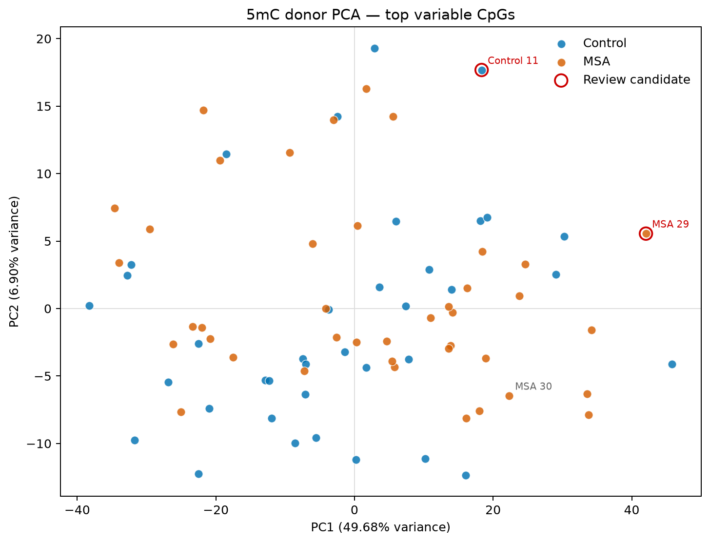
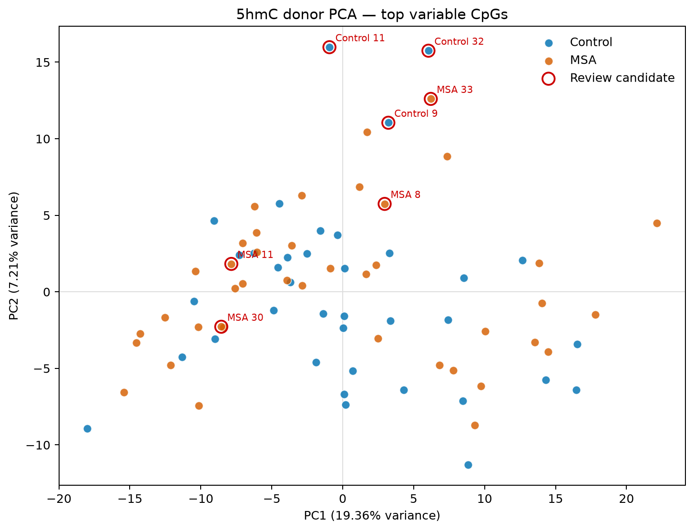
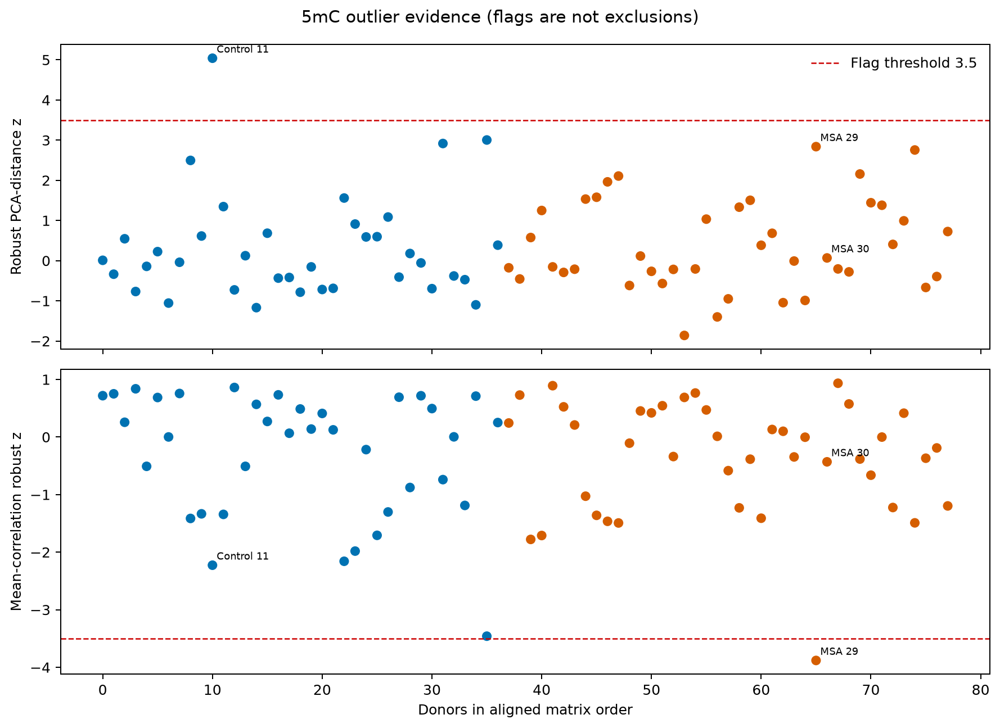
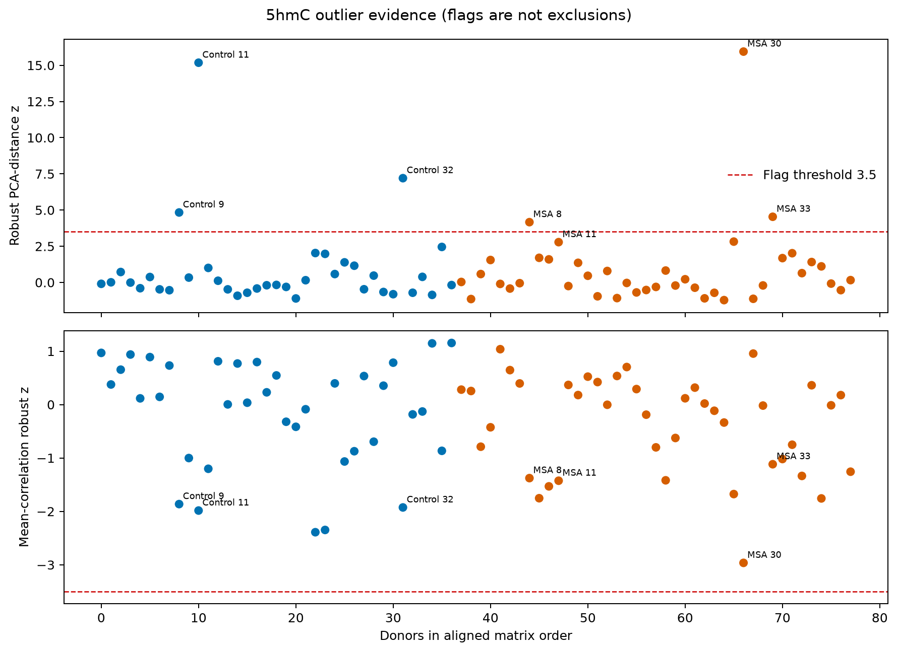
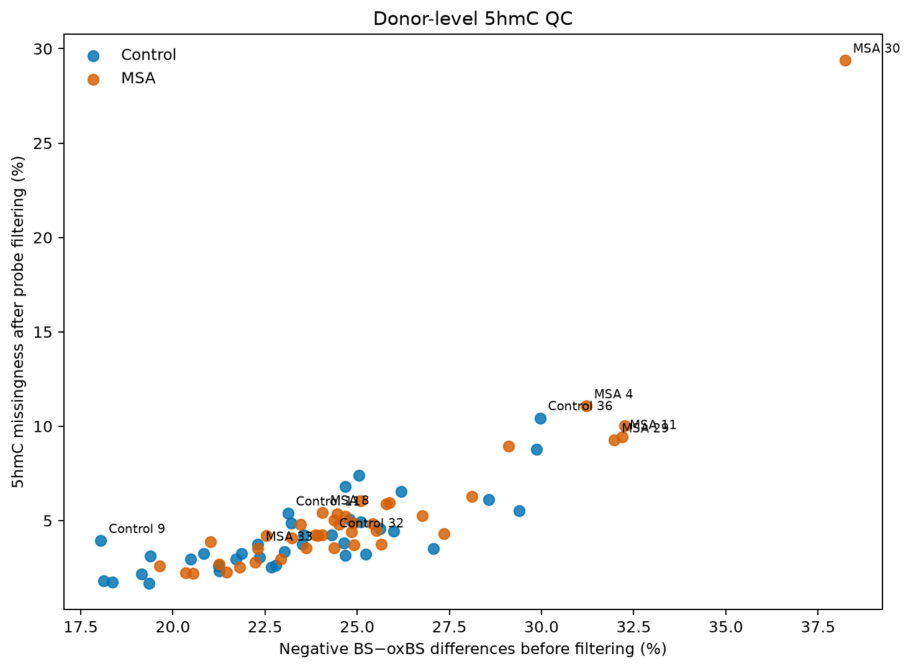
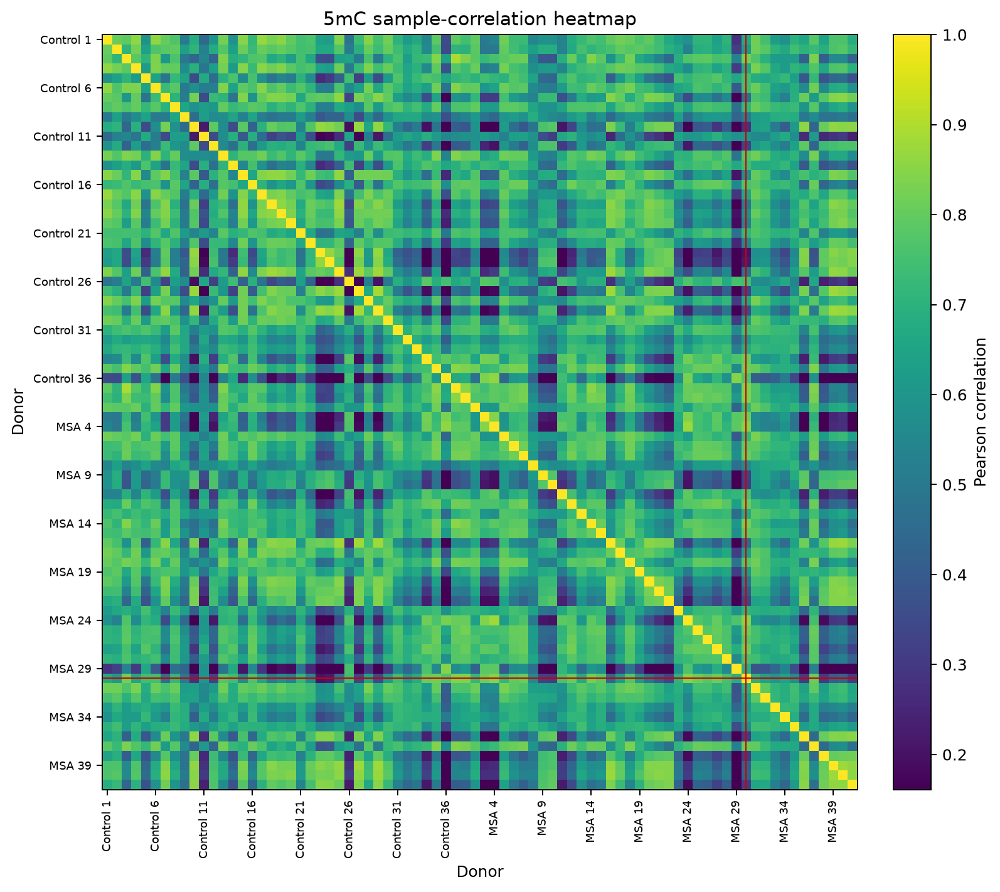
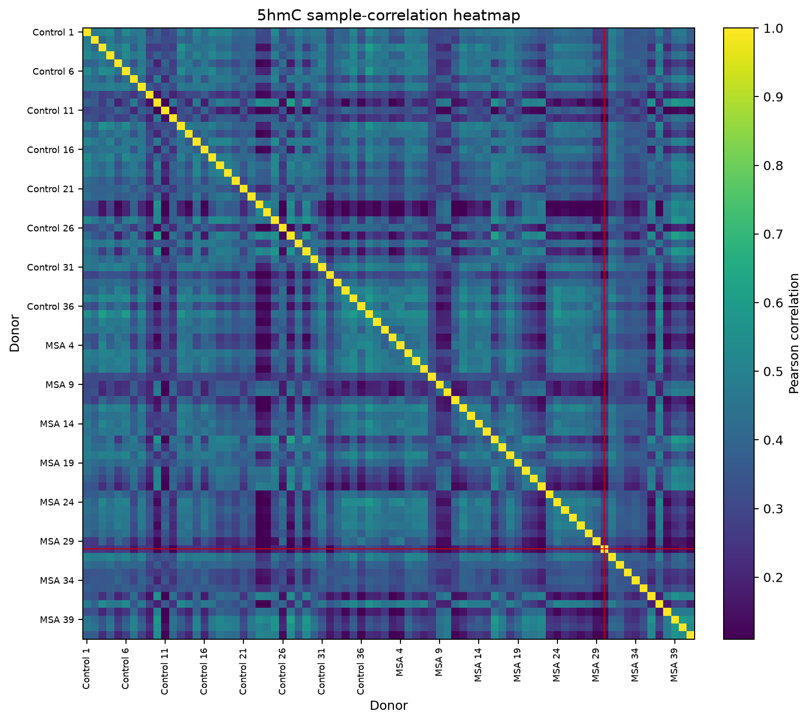
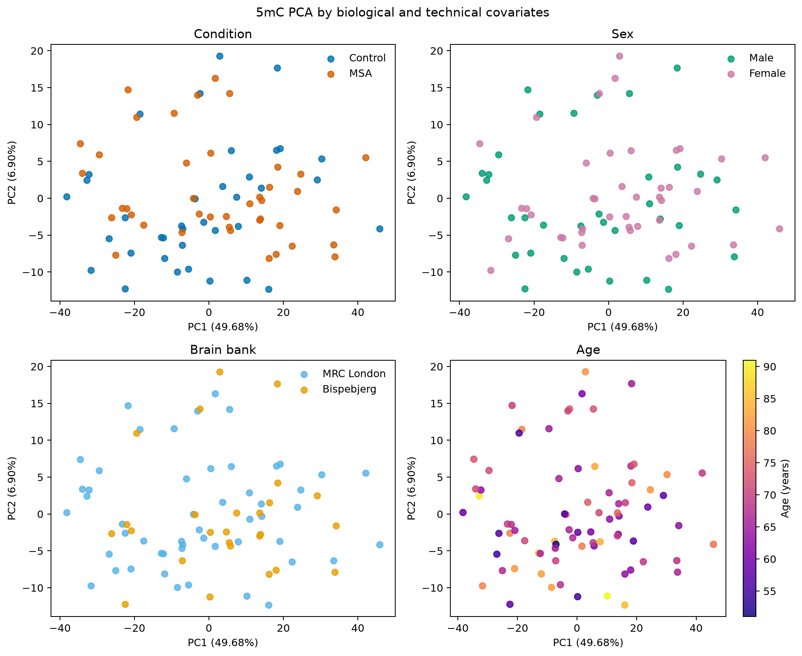
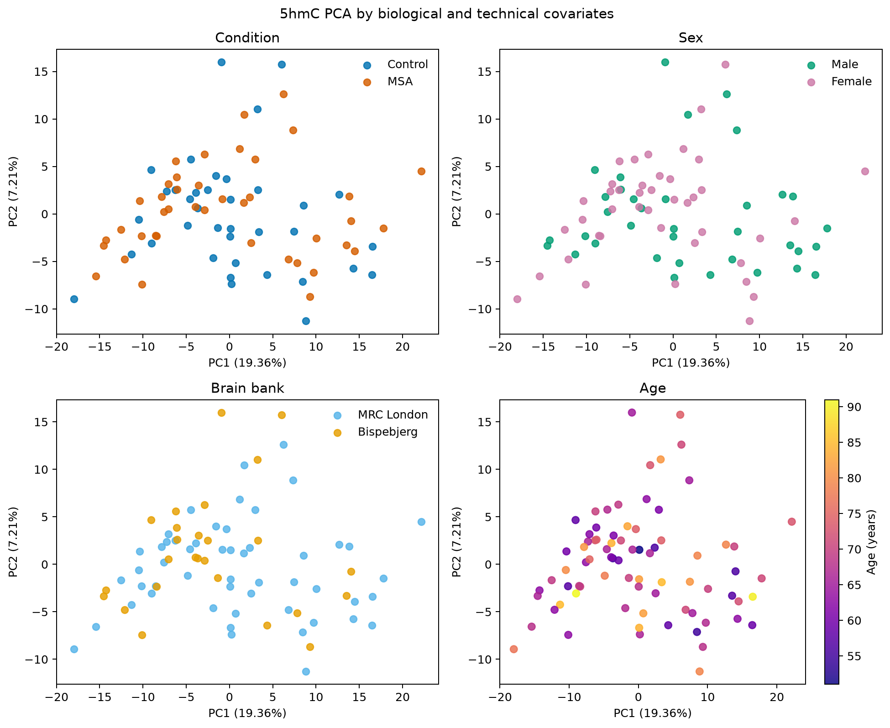
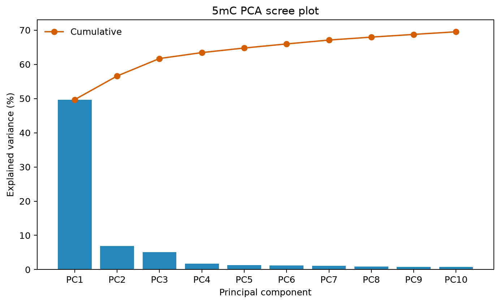
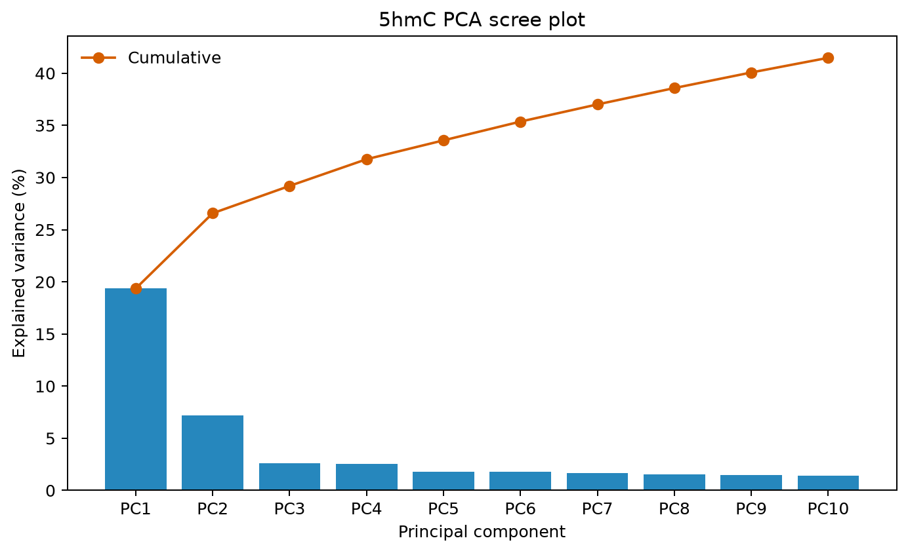